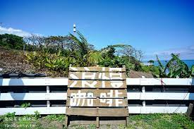
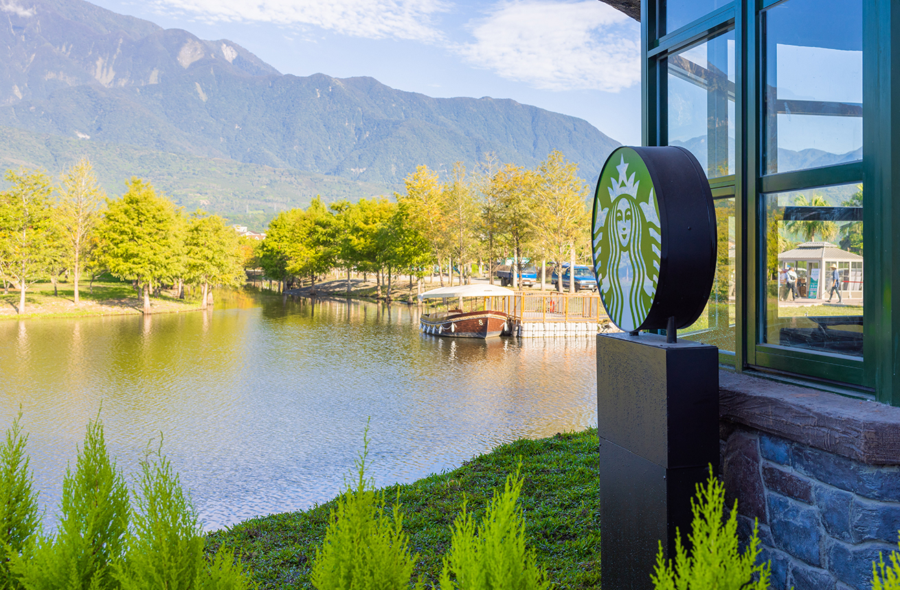
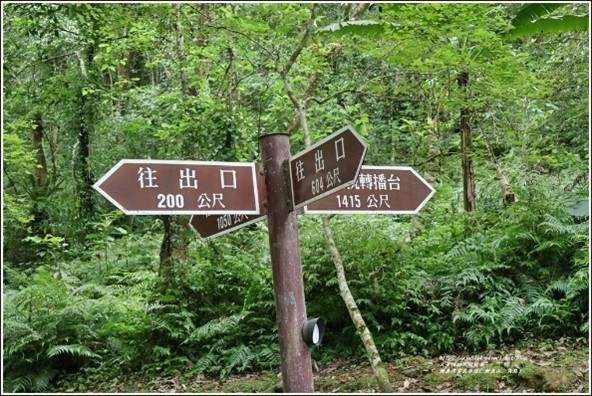
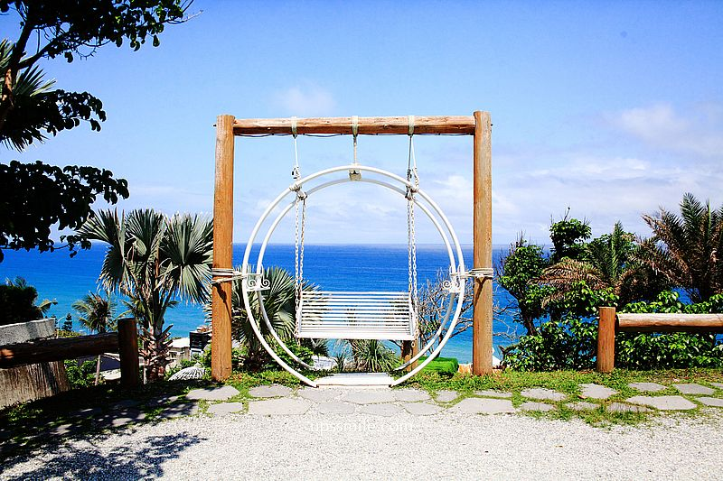
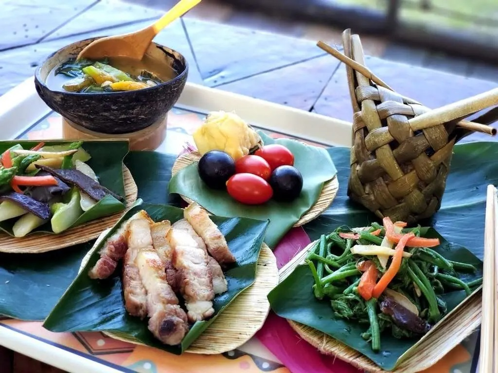

鹽寮村
簡介：鹽寮地區過去因為製鹽而得名，台灣日治時期即有「鹽寮港」之名，漢人則稱「鹽寮坑」。該村村民多以農耕、捕魚（鹽寮漁港）為業，農產有花生、香芽油、甘藷等，魚產以烏魚苗及龍蝦為主。
地點：花蓮縣壽豐鄉鹽寮村
營業時間：全天開放
花蓮鐵道文化園區
簡介：舊稱鐵道部花蓮港出張所，早期掌管花東鐵路的總指揮所，展示花蓮鐵道發展歷史的文化園區，包含老火車頭和車廂。有一、二館。
地點：（一館）花蓮縣花蓮市中山路71號 （二館）花蓮縣花蓮市福建街460號
營業時間：10:00-20:00（每週一公休）
聯絡電話：03-833-2265

和南寺
簡介：花蓮市內的佛教寺廟，環境清幽，適合靜心參拜。
地點：花蓮縣壽豐鄉191號
營業時間：全天候開放
聯絡電話：03-867-1001
豐田移民村
簡介：展示日治時期移民村的歷史與建築風貌，是歷史迷的好去處。
地點：花蓮縣壽豐鄉豐田村
營業時間：08:00-12:00、13:00-17:00，週五、週一休館

花蓮縣考古博物館
簡介：收藏花蓮地區的重要考古文物，深入了解當地史前文化。
地點：花蓮縣壽豐鄉市場1號
營業時間：週三至週日09:30-17:00（閉館前30分鐘停止入館）
休館時間：每週一至週二（如遇國定假日另行公告）
票價資訊：全票＄50／優待票（持學生證）＄25／團體票（20人以上）＄30／免費：花蓮縣民（憑證入館）
連絡電話：886-3-8652820
阿美族豐年祭
簡介：阿美族的豐年祭是七、八月間舉行，包含舞蹈和音樂表演。
地點：花蓮縣各部落的集會所舉辦。
營業時間：每年 7-8 月舉行，依部落安排
＊需要族人的邀請才可參加＊
打卡熱門景點 - 捕捉美好瞬間
浪。慢咖啡
簡介：一間結合美麗海景和咖啡的小店，適合放鬆享受下午茶。
地點：花蓮縣壽豐鄉大橋24-2號
營業時間：11:00-18:00（每週三公休）、六日到19:00
用餐規則：不提供訂位服務、入場需由現場人員安排座位、用餐三小時
聯絡電話：0918-616-911


星巴克花蓮理想門市
簡介：花蓮知名打卡景點，以日式木屋風格和自然景觀為特色的星巴克。
地點：花蓮縣壽豐鄉豐坪路三段289號
營業時間：每日 09:00 - 19:00
聯絡電話：03-865-0895


牛山呼庭
簡介：結合山與海的私房景點，擁有海景咖啡廳及觀景台，是許多遊客的拍照熱點。
地點：花蓮縣壽豐鄉牛山39-5號
營業時間：每日 10:00 - 18:00
休館時間：無
票價資訊：免費入場
連絡電話：03-860-1400
最美秘境景觀玻璃屋
簡介：位於壽豐的高空景觀餐廳，擁有落地玻璃牆及壯麗山海美景。
地點：花蓮縣壽豐鄉山嶺9-6號
營業時間：每日 09:00 - 19:00（最晚入園時間18:00）
休館時間：無
票價資訊：$100/人（5歲以下：$75/人）
連絡電話：無
海碉堡
簡介：一處位於海岸邊的廢棄軍事遺址，結合海景成為攝影愛好者的最愛。
地點：花蓮縣壽豐鄉大橋38之1號
營業時間：星期六 02:00–18:00，星期日 14:00–18:00
休館時間：無
票價資訊：免費
連絡電話：0912-691-890
山度空間
簡介：位於山區的咖啡店，提供戶外露天座位與美麗山景，是拍照打卡的熱門地點。
地點：花蓮縣壽豐鄉五十九之二號
營業時間：每日 09:00 - 18:00
休館時間：無
票價資訊：免費入場
連絡電話：0963-034-304
自然美景景點 - 擁抱美麗大自然
鯉魚山步道
簡介：輕鬆易行的登山步道，可俯瞰鯉魚潭及周邊美景。
地點：花蓮縣壽豐鄉環潭南路2號
營業時間：全天開放
聯絡電話：03-864-1691

鯉魚潭
簡介：美麗的湖泊和周邊的自然景觀，是個賞鳥和釣魚的好地方。
地點：花蓮縣壽豐鄉鯉魚潭
營業時間：全天開放
豐之谷濕地
簡介：豐富生態的濕地，適合觀鳥和自然觀察。
地點：花蓮縣壽豐鄉理想路1號
營業時間：全天開放
休館時間：無
票價資訊：免費
連絡電話：03-865-6789
鈺展苗圃落羽松
簡介：知名的落羽松秘境，冬季有美麗的金黃與紅葉景觀。
地點：花蓮縣壽豐鄉中華路2段196巷35弄35號
營業時間：08:00 - 17:00
休館時間：無
票價資訊：免費
連絡電話：0921-798-666
雲山水夢幻湖
簡介：一處如夢似幻的私人景點，擁有平靜的湖面和高山環繞。
地點：花蓮縣壽豐鄉豐坪路二段2巷201弄18號
營業時間：08:00-17:00
休館時間：無
票價資訊：免費
連絡電話：0938-111-111

海崖谷
簡介：結合咖啡廳與景觀平台的景點，可俯瞰太平洋及周邊峽谷。
地點：花蓮縣壽豐鄉鹽寮村大坑51-5號
營業時間：週一～週五 9:00~16:00，週六～週日 9:00~17:00
休館時間：無
票價資訊：門票每人200元可折100元（六歲以下孩童門票免費）
停車資訊：路上付費停車格，入口有陡坡，行動不便可請店家派接駁車。
設施：水沙坑、溜滑梯、旋轉木馬
連絡電話：03-867-1314

白鮑溪
簡介：隱藏於山林中的溪流景點，適合避暑與野餐。
地點：花蓮縣壽豐鄉（荖溪橋下）
不屬於合法安全戲水區，請注意安全。
營業時間：無
休館時間：無
票價資訊：免費
親不知子天空步道
簡介：建於山坡上的玻璃步道，提供俯瞰海岸線與壯麗山景的獨特體驗。
地點：花蓮縣豐濱鄉花東海岸公路
營業時間：09:00-16:40（星期三公休）
休館時間：星期三公休
票價資訊：$40/人，停車費50元
連絡電話：03-871-1339

樹湖瀑布
簡介：位於樹林深處的隱秘瀑布，步道沿途景色宜人，適合健行。
地點：花蓮縣壽豐鄉樹湖村
營業時間：全天開放
休館時間：無
票價資訊：免費
連絡電話：03-865-2131
親子友善景點 - 家庭歡樂溫馨回憶
遠雄海洋公園
簡介：台灣知名的海洋主題樂園，包含海豚與海獅表演、遊樂設施、以及互動性高的海洋生物展示。
地點：花蓮縣壽豐鄉鹽寮村福德189號
營業時間：每日 09:30 - 17:00
休館時間：無
票價資訊：全票$350（19歲(含)以上，65歲以下之成年人）／優待票$250（13歲(含)以上、18歲(含)以下之青少年，須出示相關證件）／學童票$200（115cm(含)以上~150cm以下、國小生12歲以下之兒童，須出示相關證件）(僅供參考，以現場票價為準)
連絡電話：03-812-3199
月崖灣親子農場
簡介：以農村體驗為主題的親子樂園，提供採果、餵食動物等互動活動。
地點：花蓮縣壽豐鄉179號
營業時間：每日 09:00 - 18:00
休館時間：無
票價資訊：免費
連絡電話：03-867-1108
池南國家森林遊樂區
簡介：結合森林步道與生態教育的遊樂區，適合親子旅行。
地點：花蓮縣壽豐鄉林園路65號
營業時間：每日 08:00 - 17:00
休館時間：無
票價資訊：免費
連絡電話：03-864-1594
吉籟獵人學校
簡介：提供阿美族傳統技能與文化的體驗活動，如打獵和烹飪。
地點：花蓮縣壽豐鄉水璉路179號
營業時間：需提前預約
聯絡電話：03-8513990、0986-997778

